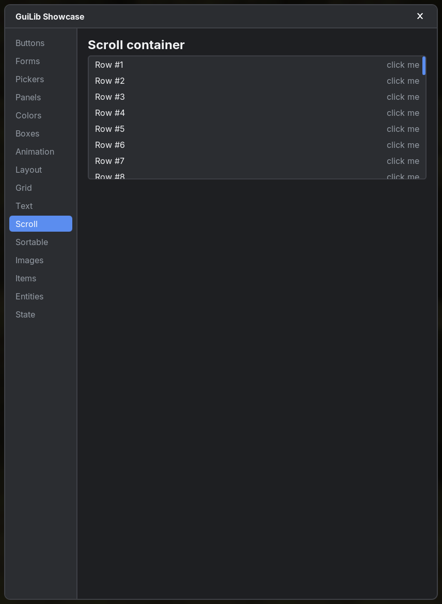
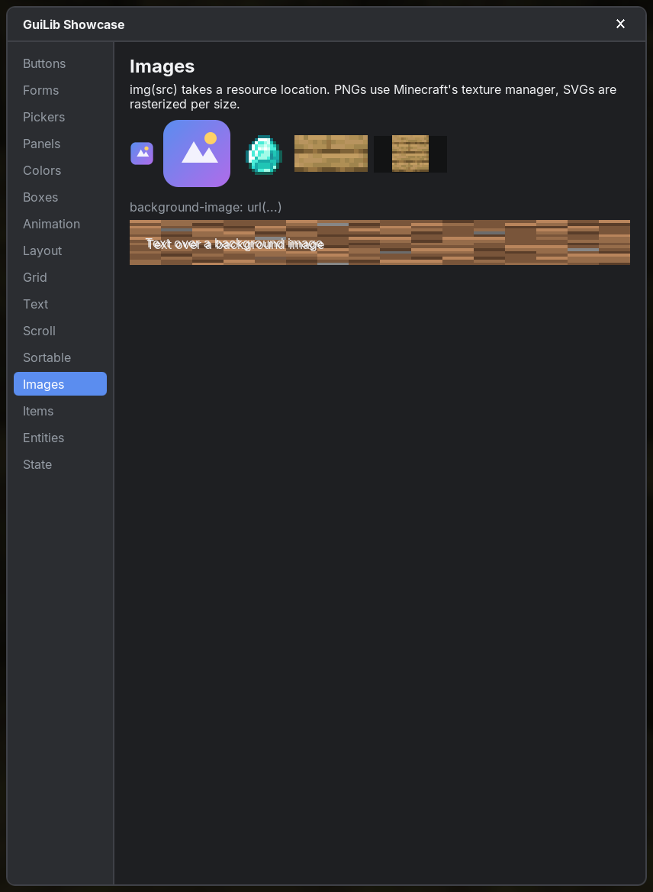
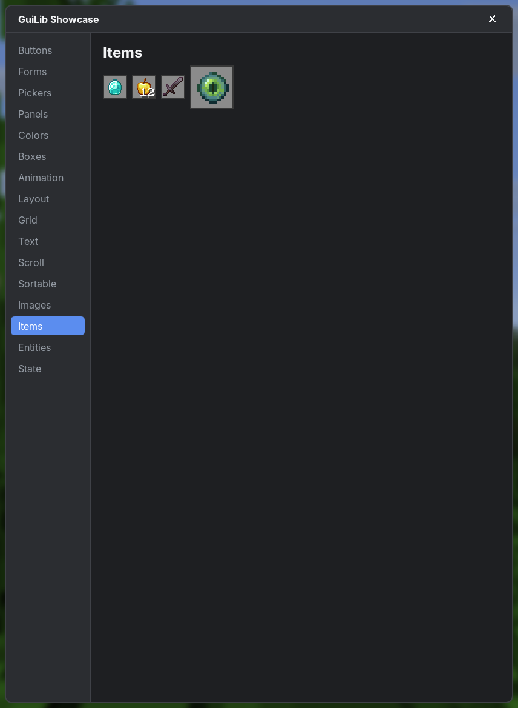

Elements
Tag functions build elements with HTML names. Every tag takes the same common props and event handlers; children go in the trailing lambda.
#Common props
| Prop | Type | Description |
|---|---|---|
className | String? | CSS classes, space separated. Use classNames(...) to build them conditionally. |
id | String? | Element id for #id selectors and querySelector. |
style | String? | Inline CSS as a string: style = "width: 20px; color: red". |
key | Any? | Identity among siblings (lists). |
title | String? | Native tooltip shown after hovering for 500 ms. |
ref | Ref<Element?>? | Receives the Element (see useElementRef). |
tabIndex | Int? | Makes the element focusable (0: in Tab order, -1: only by click/code). |
| Events | lambdas | onClick, onDoubleClick, onContextMenu, onMouseDown, onMouseUp, onMouseMove, onMouseEnter, onMouseLeave (MouseEvent), onWheel (WheelEvent), onKeyDown, onKeyUp (KeyboardEvent), onFocus, onBlur (FocusEvent), onScroll (ScrollEvent). See Events. |
div(className = "card", id = "main", style = "padding: 4px", title = "A card", onClick = { e -> println(e.clientX) }) {
+"children go here"
}#Structure & text
| Tags | Default display | Notes |
|---|---|---|
div section header footer nav main aside article form | block | Generic containers. |
p h1 h2 h3 h4 | block | Small bottom margins; headings are bold (2em, 1.5em, 1.25em, 1em). |
ul ol li | block | Lists (no bullets by default). |
pre | block | white-space: pre and the Minecraft font. |
hr | block | Thin divider line. |
span a strong b em i small code label | inline | b/strong bold, em/i italic, small 0.85em, code Minecraft font. label forwards clicks to the first input/select/button inside. |
br | – | Line break inside text. |
text(component) | inline | A Minecraft Component (chat message, item name, Component.translatable): colors incl. RGB, bold/italic/underline/strikethrough, show_text hover events as tooltips, show_item hover events as Minecraft's item tooltip (text(stack.displayName) = an item link like in chat), click events (links, commands, copy) like in chat. span.guilib-text, clickable parts .guilib-text-link. |
button | inline-flex | Centered content, disabled. Enter/Space activate a focused button. Disabled elements get no mouse events. |
#GuiLib tags
#scrollGuiLib tag
A block element with overflow: auto and a thin scrollbar. Any element with overflow: auto/scroll scrolls as well; scroll is a convenient default.
fun NodeBuilder.scroll(className: String? = null, …, children: NodeBuilder.() -> Unit)scroll(className = "list", style = "max-height: 120px") {
for (p in parties) PartyRow(p, key = p.id)
}
#imgtag
An image from your resources (PNG, SVG or GIF). Its natural size is the image size; object-fit is supported. Animated GIFs (since 0.3.1) loop like in a browser; all images with the same src play in sync.
fun NodeBuilder.img(
src: String,
alt: String? = null,
className: String? = null,
id: String? = null,
style: String? = null,
key: Any? = null,
)| Parameter | Type | Default | Description |
|---|---|---|---|
src | String | required | Resource location, e.g. "mymod:textures/gui/logo.png". |
alt | String? | null | Alternative text. |
className, id, style, key | Standard props (see Elements). | ||
img("mymod:textures/gui/logo.svg", className = "logo", style = "width: 32px; height: 32px")
#itemGuiLib tag
Renders a Minecraft item stack like in an inventory slot (16×16 by default; size it with CSS). Needs a loaded world.
fun NodeBuilder.item(
stack: ItemStack,
decorations: Boolean = true,
tooltip: Boolean = false,
className: String? = null,
id: String? = null,
style: String? = null,
key: Any? = null,
)| Parameter | Type | Default | Description |
|---|---|---|---|
stack | ItemStack | required | The item stack (typed Any so the core stays Minecraft-free). |
decorations | Boolean | true | Show count and durability bar. |
tooltip | Boolean | false | Show Minecraft's item tooltip (name, lore, enchantments …) while the icon is hovered, like in an inventory. |
className, id, style, key | Standard props (see Elements). | ||
item(ItemStack(Items.DIAMOND_SWORD), tooltip = true, style = "width: 32px; height: 32px")
#entityGuiLib tag
Renders a living entity scaled to fit its box, like the inventory player model (48×72 by default).
fun NodeBuilder.entity(
entity: LivingEntity,
followMouse: Boolean = false,
lookX: Float = 0f,
lookY: Float = 0f,
scale: Float = 1f,
className: String? = null,
id: String? = null,
style: String? = null,
key: Any? = null,
)| Parameter | Type | Default | Description |
|---|---|---|---|
entity | LivingEntity | required | The entity, e.g. a FakePlayer. |
followMouse | Boolean | false | Look at the mouse cursor. |
lookX | Float | 0f | Look offset in px when not following the mouse. |
lookY | Float | 0f | Look offset in px when not following the mouse. |
scale | Float | 1f | Extra scale on top of fitting the box. |
className, id, style, key | Standard props (see Elements). | ||
val me = useMemo { FakePlayer.ofLocalPlayer() } // create once; null without a world
val notch = useMemo { FakePlayer.of("Notch") }
div(className = "models") {
me?.let { entity(it, followMouse = true) }
notch?.let { entity(it, lookX = -20f) }
}
#FakePlayerclass
Client-side player entities for entity(...) (package net.sbo.guilib.fabric.entity). Every factory returns null when no world is loaded, so create them once with useMemo. Skins are resolved asynchronously.
FakePlayer.ofLocalPlayer(): FakePlayer?
FakePlayer.of(name: String): FakePlayer?
FakePlayer.of(uuid: UUID): FakePlayer?
FakePlayer.of(profile: GameProfile): FakePlayer?
FakePlayer.of(player: AbstractClientPlayer): FakePlayer?#playerHeadGuiLib tag
A player's face like in the tab list (16×16 by default), scaled to its box. The skin loads in the background (the default skin is shown until then); no world is needed. The CSS tag selector is player-head.
fun NodeBuilder.playerHead(
player: Any,
hat: Boolean = true,
className: String? = null,
id: String? = null,
style: String? = null,
key: Any? = null,
)| Parameter | Type | Default | Description |
|---|---|---|---|
player | Any | required | A name (String), UUID, GameProfile, ResolvableProfile or AbstractClientPlayer. |
hat | Boolean | true | Draw the hat layer. |
className, id, style, key | Standard props (see Elements). | ||
for (member in party) div(className = "member") {
playerHead(member.name, style = "margin-right: 4px")
+member.name
}
playerHead(uuid, style = "width: 32px; height: 32px")#Structure helpers
#fragmentfunction
Groups children without a wrapper element (like <>…</>), e.g. to give a group of elements a key.
fun NodeBuilder.fragment(key: Any? = null, children: NodeBuilder.() -> Unit)#portalfunction
Renders children into the overlay layer above everything else (like createPortal(children, document.body)). Position the content with position: fixed. Menus, tooltips and modals use portals so they are never clipped by scroll containers.
fun NodeBuilder.portal(className: String? = null, key: Any? = null, children: NodeBuilder.() -> Unit)portal {
div(className = "popover", style = "position: fixed; left: ${x}px; top: ${y}px") { +"Above everything" }
}#Fonts
font-family accepts inter (default, bundled), minecraft (the vanilla font; alias monospace) and fonts you register. Weights map to the nearest registered face (400/500/600/700).
FontManager.register("roboto", 400, false, "mymod:fonts/roboto-regular.ttf")
FontManager.register("roboto", 700, false, "mymod:fonts/roboto-bold.ttf")